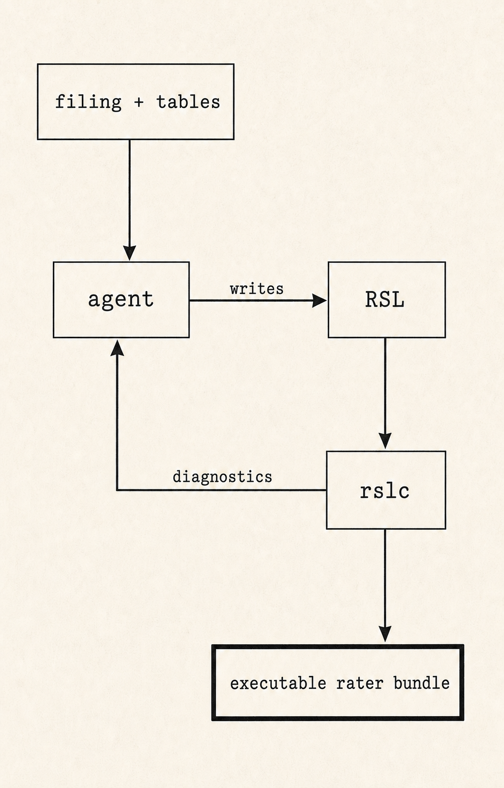
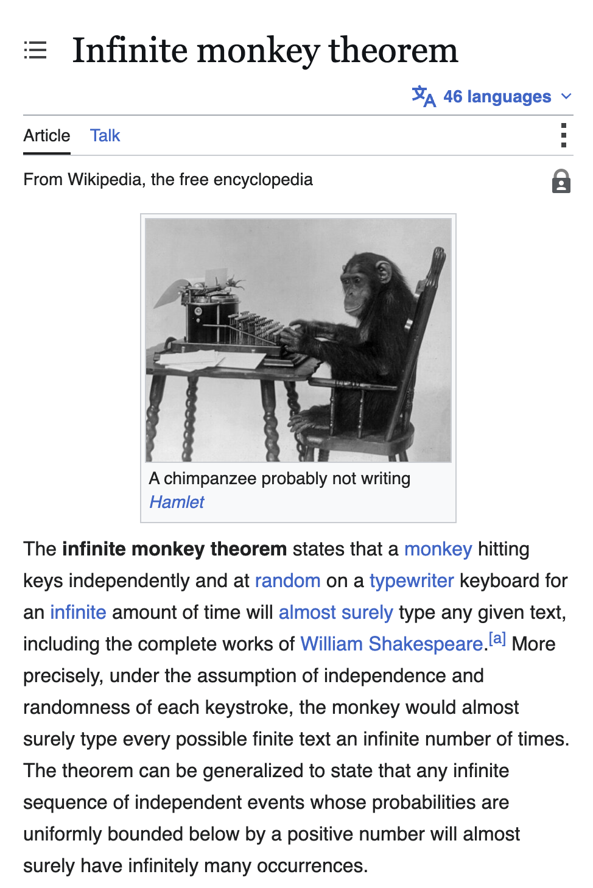

Designing a compiler for an agent-written DSL
I recently got to build a compiler for a domain-specific language at work. At Effective, one product we offer is the ability to design, host, and reverse-engineer pricing algorithms from public rate filings. I wrote a little about our initial experiments with this idea here.
The gist of it is that rating algorithms, or raters, compute an insurance premium from a lot of factors and input values. Practically, a rater is a just a pure function consisting of table lookups, arithmetic, branches, and aggregation over objects. Raters are valuable because they encode how an insurance carrier prices risk in a market.
A well-implemented rater should be a total function over its input type. This property gives us some useful design constraints that result in a compiled, executable DSL (Rating Specification Language or RSL) seems easier for agents to reason about than a more flexible language like Python or TypeScript, probably because agents do very well at writing code until a compiler stops yelling at them.


Eventually, either models will get good enough to one-shot these programs in any programming language from a universe of PDF and Excel data and we can throw out RSL and its compiler, but for now it's still proving useful.
What properties do we want?
At a high level, we want to make it hard to represent a rater that is ambiguous, incomplete, or hard to inspect.
- One source of truth for semantics and execution. The rating program should be both specification and executable so the two can't drift (the actuary <-> software engineer correspondence gap causes a lot of headaches in the industry today).
- Total function. For any valid input, the rater should produce a rating result, and it should be deterministic
- Static errors where possible. Missing references, unsatisfiable constraints on types, dead code, operands with incompatible dimensions, etc., should fail at compile time rather than turn into strange premiums at runtime.
- Total lookups. Probably the most important static check: If a program reads from a rating table, every possible runtime key should resolve unambiguously to a value under that table’s matching rules (tables in RSL declare type signatures and are accessed through lookup functions that declare type signatures).
- Introspection. The compiler should be able to answer questions like: what does this value depend on, which source filing did this calculation come from, what inputs can reach this branch, and what table does this lookup use?
Why write a compiler?
We needed a few things from a product standpoint:
- RSL is intended to be a specification of a rating algorithm but also an executable, so we need something to make it executable.
- We want to make it fast, since the input data for these programs consists of ~100s of 1000s to millions of complex records.
- We wanted to offer the ability to export raters to Python, Excel, or a JSON model.
- We need to introspect on the program so the agent has a richer set of debugging tools (feedback) than an out-of-the-box compiler provides.
- A constrained DSL reduces the review surface. More things are guaranteed by construction. More expressive languages gave agents too many escape hatches to do neurotic things like set default values, implement standard operations in inefficient ways, disregard dimensionality, and so on.
- A compiled DSL lets us enforce things that would be annoying for humans to maintain manually, like explicit declarations of almost everything, such as citations to source documents, semantic annotations of the code, and proofs that ordinary table lookups are total over their declared domains (which often catches errors in table extraction).
The version from the earlier blog post was a Python approximation of a compiler. Agents were causing the codebase to tend toward a mess of stringly typed objects, which undermined the guarantees we wanted the compiler to provide.
To make the RSL compiler easier for agents to maintain and extend, so I rewrote it in Rust with the help of Codex. Writing a compiler with agents was its own experiment, with its own creative verification mechanisms, and probably deserves a post of its own.
Why Rust?
- Fast runtime (obviously)
- Strong typing.
- Low level control over memory, since we need to do some optimizing due to the size of the tabular data rating workloads operate over.
- Nice ecosystem: PyO3 has Python bindings,
rust_xlsxwriterlets the compiler reuse cached data to emit XLSX files without the memory overhead we encountered withopenpyxl, other fun packages we may want to use eventually.
In its present form, RSL looks like a small, statically typed spreadsheet language. It has entities with inputs and computed values, pure expressions, explicit relationships, and tables as first-class declarations. Here is a toy example:
spec {
carrier: "Example Mutual",
state: CA,
product: "Homeowners",
effective_date: 2026-08-30,
}
# Source declarations make filing provenance part of the program.
Sources = {
manual: Source = {
path: "sources/rate-manual.pdf",
title: "Homeowners Rate Manual"
}
}
Types = {
# Domain types carry their own numeric precision.
Factor = Num { precision: factor },
Premium = Num { precision: cents }
}
Tables = {
# The table is tied to the page it was extracted from.
AlarmFactors [cite: manual:p12] :
(Policy.has_alarm) -> { factor: Factor }
match: specific
columns: {
has_alarm: "has_alarm" [type: Bool],
factor: "factor" [type: Factor]
}
}
Entities = {
Policy = {
inputs {
base_premium: Premium [cite: manual:p10],
has_alarm: Bool,
eligible: Bool
}
# Constraints define the valid input domain rslc can sample.
requires {
self.base_premium >= 500,
self.base_premium <= 2000
}
step rating [cite: manual:p12] {
# lookup! must resolve to exactly one row for every valid key.
alarm_factor: Factor =
lookup!(AlarmFactors, self.has_alarm).factor,
# Every valid input produces a premium or an explicit rejection.
written_premium: Premium =
if self.eligible then
self.base_premium * self.alarm_factor
else
reject("INELIGIBLE", "Outside underwriting appetite")
}
}
}
# Only declared outcomes become part of the published interface.
RatingOutcomes = {
written_premium: Policy.written_premium
}has_alarm,factor true,0.95 false,1.00
Select a command to run it against the example bundle.
rslc, the compiler’s CLI, has some commands that are particularly useful for agents
rslc checkloads the table data for the program proves that every valid runtime key based on the table's type declaration resolves unambiguously to a value under the table’s matching scheme (interpolation, banding, exact, etc.). This needs to be fast because agents run it often as they write RSL files.rslc inputs sampleconstructs valid inputs from the domain described by the program’s types, ranges, entity relationships, and constraints. RSL input types can get very complex, and agents struggle to produce valid input objects, and for some cases (like probing if the program has appropriate limits implemented by 'fuzzing' against very large and very small values) we want to generate lots of random-ish valid and invalid inputs mechanically and fast.